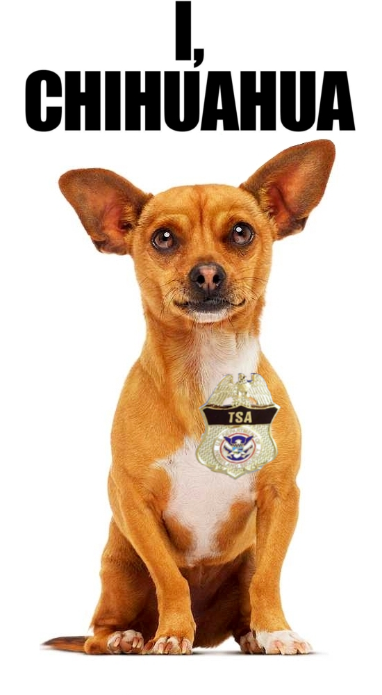

<?xml version="1.0" encoding="UTF-8"?>
<rss version="2.0"
	xmlns:content="http://purl.org/rss/1.0/modules/content/"
	xmlns:wfw="http://wellformedweb.org/CommentAPI/"
	xmlns:dc="http://purl.org/dc/elements/1.1/"
	xmlns:atom="http://www.w3.org/2005/Atom"
	xmlns:sy="http://purl.org/rss/1.0/modules/syndication/"
	xmlns:slash="http://purl.org/rss/1.0/modules/slash/"
	>

<channel>
	<title>Chronosynclastic Infundibulum &#187; profiling</title>
	<atom:link href="http://www.semanticoverload.com/tag/profiling/feed/" rel="self" type="application/rss+xml" />
	<link>http://www.semanticoverload.com</link>
	<description>The world through my prisms</description>
	<lastBuildDate>Thu, 07 Apr 2011 17:36:17 +0000</lastBuildDate>
	<language>en-US</language>
	<sy:updatePeriod>hourly</sy:updatePeriod>
	<sy:updateFrequency>1</sy:updateFrequency>
	<generator>http://wordpress.org/?v=3.5</generator>
		<item>
		<title>TSA is like a Chihuahua</title>
		<link>http://www.semanticoverload.com/2010/01/05/tsa-is-like-a-chihuahua/</link>
		<comments>http://www.semanticoverload.com/2010/01/05/tsa-is-like-a-chihuahua/#comments</comments>
		<pubDate>Tue, 05 Jan 2010 05:43:34 +0000</pubDate>
		<dc:creator>Semantic Overload</dc:creator>
				<category><![CDATA[humor]]></category>
		<category><![CDATA[US]]></category>
		<category><![CDATA[chihuahua]]></category>
		<category><![CDATA[Jeff Dunham]]></category>
		<category><![CDATA[nigerian]]></category>
		<category><![CDATA[profiling]]></category>
		<category><![CDATA[travel]]></category>
		<category><![CDATA[TSA]]></category>
		<category><![CDATA[yemen]]></category>

		<guid isPermaLink="false">http://www.semanticoverload.com/?p=388</guid>
		<description><![CDATA[Indeed, TSA is much like the Chihuahua that Jeff Dunham talks about in the opening act of his &#8220;Spark of Insanity&#8221; tour. The sketch goes something like this [source]: &#8220;I figured out size does matter in the canine brain. Bill &#8211; golden retriever &#8211; very smart animal. When he was a puppy and I had [...]]]></description>
				<content:encoded><![CDATA[<p><a href="../../../wp-content/uploads/2010/01/tsa_chihuahua.png"></a>Indeed, TSA is much like the Chihuahua that Jeff Dunham talks about in the opening act of his &#8220;Spark of Insanity&#8221; tour. The sketch goes something like this [<a title="Jeff Dunham on Chihuahua" href="http://www.tubechop.com/watch/44332">source</a>]:</p>
<blockquote><p>&#8220;I figured out size does matter in the canine brain. Bill &#8211; golden retriever &#8211; very smart animal. When he was a puppy and I had to potty train him, if he pooped on the living room carpet, I stuck his nose in it. Three time later, he figured out &#8216;Oh, I am not supposed to crap here!&#8217;. Next two dogs, the same thing.</p>
<p>Now the little brain-dead Chihuahua comes along. She poops on the living room carpet, I stick her nose in it; three times later she thinks &#8216;Oh, I am not supposed to crap ever!&#8217;&#8230;.. And that&#8217;s why they shake.&#8221;</p></blockquote>
<p>The TSA did pretty much the same thing. On December 26th 2009, <a title="AP sources: Attempt to blow up airliner foiled" href="http://news.yahoo.com/s/ap/us_airliner_disturbance">Umar Farouk Abdul Mutallab tried to blow up a Northwest Airlines plane</a> as it was preparing to land in Detroit. The usual noises followed ranging from <a title="Hoekstra: Blame Obama For Near Bombing Of Airliner" href="http://tpmlivewire.talkingpointsmemo.com/2009/12/rep-pete-hoekstra-r-mi-says-blame-obama-for-near-bombing-of-airliner.php">blaming Obama</a> for the incident to demanding that <a href="http://www.telegraph.co.uk/news/worldnews/middleeast/yemen/6906861/Detroit-terror-attack-passenger-profiling-failed.html">all Muslims be made to go through special security checks</a>.</p>
<p>This incident could have been prevented if Umar Farouk Abdul Mutallab was not allowed to board the plane in the first place. All the warning signs were there: Umar&#8217;s <a href="http://www.cbsnews.com/stories/2009/12/26/ap/government/main6025129.shtml">father had warned the CIA</a> about Umar,  <a href="http://www.mirror.co.uk/news/top-stories/2009/12/31/beware-the-nigerian-from-yemen-115875-21932857/">anti-terror chiefs were warned five months</a> ago that an al-Qaeda cell in Yemen was plotting a deadly attack using &#8220;The Nigerian&#8221;. Disregarding both these (vital) pieces of information, here is someone who bought one-way tickets from Nigeria to Yemen to the USA paying only cash and with no baggages to check-in. This should have raised suspicions, and he should have been singled out for additional security and through additional scanners.</p>
<p>Metaphorically speaking, TSA pooped on the living room carpet and the Nigerian stuck their nose into it! One would expect a rational response to be better mechanisms to profile passengers, not according to race or religion (which seems to be what all the rage is about), but according to passenger behavior. In this case, <a href="http://www.washingtonpost.com/wp-dyn/content/article/2009/12/25/AR2009122501355.html">someone on the &#8220;alert list&#8221;</a>, paying cash for a one-way transcontinental flight, with no check-in baggage would qualify as suspicious behavior. That would be saying &#8220;Oh, I am not supposed to crap here!&#8221;.</p>
<p>Instead, the TSA chooses to think &#8220;I am not supposed to crap ever!&#8221; and decides to put <a title="Passengers face security crackdown after failed airliner bomb plot" href="http://www.timesonline.co.uk/tol/news/world/us_and_americas/article6969073.ece">ALL passengers through additional security increasing</a> [<a href="http://www.bangkokpost.com/news/world/163694/restrictions-rise-after-terrorism-attempt">Bangkok Post</a>, <a href="http://euobserver.com/9/29201">EUObserver</a>, <a title="New Restrictions Quickly Added for Air Passengers" href="http://www.nytimes.com/2009/12/27/us/27security.html">NY Times</a>].</p>
]]></content:encoded>
			<wfw:commentRss>http://www.semanticoverload.com/2010/01/05/tsa-is-like-a-chihuahua/feed/</wfw:commentRss>
		<slash:comments>0</slash:comments>
		</item>
		<item>
		<title>Legalities with Pit Bull</title>
		<link>http://www.semanticoverload.com/2007/10/31/legalities-with-pit-bull/</link>
		<comments>http://www.semanticoverload.com/2007/10/31/legalities-with-pit-bull/#comments</comments>
		<pubDate>Wed, 31 Oct 2007 22:07:47 +0000</pubDate>
		<dc:creator>Semantic Overload</dc:creator>
				<category><![CDATA[debate]]></category>
		<category><![CDATA[discussion]]></category>
		<category><![CDATA[legal]]></category>
		<category><![CDATA[society]]></category>
		<category><![CDATA[breeds]]></category>
		<category><![CDATA[dog fight]]></category>
		<category><![CDATA[dogs]]></category>
		<category><![CDATA[FAA]]></category>
		<category><![CDATA[law]]></category>
		<category><![CDATA[pit bull]]></category>
		<category><![CDATA[profiling]]></category>
		<category><![CDATA[radio]]></category>
		<category><![CDATA[radio station]]></category>

		<guid isPermaLink="false">http://semanticoverload.gaddarinc.com/?p=129</guid>
		<description><![CDATA[At my local community radio station, a pit bull puppy was found; presumably lost. There was some discussion about what should be done with it, should it be handed over to animal shelter? During the discussion, one of the volunteers has this to say about it: Calling animal control for a Pit Bull in this [...]]]></description>
				<content:encoded><![CDATA[<p>At my local community radio station, a pit bull puppy was found; presumably lost. There was some discussion about what should be done with it, should it be handed over to animal shelter? During the discussion, one of the volunteers has this to say about it:</p>
<blockquote><p>
Calling animal control for a Pit Bull in this county is a death sentence for the dog.  They check for a chip, and if they don&#8217;t find one they immediately kill the dog.  The breed is considered dangerous and a nuisance by ordinance and they will not adopt one out.</p>
<p>Having been through rescuing a Pit Bull myself I have to tell you that finding a home for one and keeping it out of the hands of the dog fight people is tough.  I had one that I rescued from the house behind Early Bird boarded for close to seven months while I interviewed potential adopters, rejecting all of them that didn&#8217;t reject the dog because they either didn&#8217;t check out or immediately began patting the dog down and commenting on &#8220;really nice muscle tone&#8221; and how &#8220;well developed&#8221; they were as they drooled.  I terminated interviews on the spot with close to half a dozen when it became clear what they wanted the dog for.</p>
<p>The sad fact of the matter is that Pit Bulls are a menace, not because they&#8217;re bad dogs but because they&#8217;re a &#8220;macho dog&#8221; that macho people get because they want to walk the macho dog and show off to everyone that they can handle a Pit.  The problem is that they lose interest in the dog that they really didn&#8217;t want to begin with (they&#8217;re meant to be a prop, not a pet) and start letting the dog walk itself.  The result is that either the dog gets killed by a car or truck on the road, by Animal Control if they&#8217;re picked up, or worst case they kill a human when they join up with a pack of other dogs and instinct takes over.</p>
<p>And the Pit Bull puppy mills continue to crank them out because there&#8217;s a market for them.  For every macho person that loses interest there are two or three more that decide to express themselves by getting a Pit.</p>
<p>The only suggestion that I would have had to offer if I had seen this in time would be to put it in the station&#8217;s dog run, put out some food and water, then start trying to locate the owner or place him/her with a rescue group.  I&#8217;ll warn you in advance that the rescue groups are completely clogged with dogs and they don&#8217;t want any more.  Most of the ones that I called told me to take the dog to a vet and have them put down as the most expedient and humane way to rid the planet of yet another unwanted Pit Bull.  No, I&#8217;m not exaggerating, that&#8217;s what I was told, over and over.  That&#8217;s why we boarded the one that we rescued for so long.
</p></blockquote>
<p><span id="more-129"></span><br />
I did some more research and found out that Pit Bulls have been discriminated against in many parts of the world. The article I found online about <a href="http://www.dogbitelaw.com/PAGES/breedlaws.html">breed specific laws</a> gives you a wealth of information about this issue.</p>
<p>The whole issue is murky for a host of reasons. First being the definition of &#8216;Pit Bull&#8217; itself. As it turns out, Pit Bull is not a breed of dog. It a generic term applied to dogs used in dog fight, and are generally believed to be aggressive, and hence dangerous to human when left unsupervised.<br />
<a href="http://en.wikipedia.org/wiki/Pit_Bull">Wikipedia&#8217;s definition of a Pit Bull</a> is:</p>
<blockquote><p>
Pit bull is a term commonly used to describe several types of dogs with similar physical characteristics. Its use in media is often vague and rarely descriptive of specific breeds. There are several physically similar breeds that are often termed &#8220;pit bull&#8221;, including the American Pit Bull Terrier, American Staffordshire Terrier, the Staffordshire Bull Terrier, the Bull Terrier, the Perro de Presa Canario, Cane Corso, and Argentine Dogos.These breeds are usually not included by name in any Breed Specific Legislation (see below), but are sometimes included because of a broad definition and confusion as to what a pit bull actually is.
</p></blockquote>
<p>So it turns out that the term Pit Bull is somewhat of profiling, much like the profiling that is done by the U.S. Homeland Security, and the FAA where amazingly some (specific) people seem to always be randomly selected for security checks every time they fly.</p>
<p>A related legal ambiguity is that if Pit Bulls are not a breed and are not clearly defined, then how do you implement a law against the breed that (a) doesn&#8217;t exist, and (b) has no clear definition. The argument for it is typically the argument <a href="http://library.findlaw.com/2003/May/15/132747.html">[Defining Obscenity]</a> <a href="http://caselaw.lp.findlaw.com/scripts/getcase.pl?court=US&#038;vol=378&#038;invol=184">[Legal Proceedings]</a> about defining &#8216;hard-core&#8217; pornography, which goes something like this: &#8220;I shall not today attempt further to define the kinds of material I understand to be embraced . . . [b]ut I know it when I see it . . .&#8221;</p>
<p>But in the middle of all this confusion the dogs have been left unprotected. It is important to remember that dogs are human-created species through selective breeding of members from the Grey Wolf species. That thrusts a moral responsibility on us as to how we should treat them. If we choose to make laws about them, then we should ensure that these laws are &#8216;fair&#8217;, much like the laws about humans should be fair (of course, torture must be legalized in national interest, and all the Arabs and Arab-looking must be randomly selected to additional security checks on all flights).</p>
]]></content:encoded>
			<wfw:commentRss>http://www.semanticoverload.com/2007/10/31/legalities-with-pit-bull/feed/</wfw:commentRss>
		<slash:comments>0</slash:comments>
		</item>
	</channel>
</rss>
